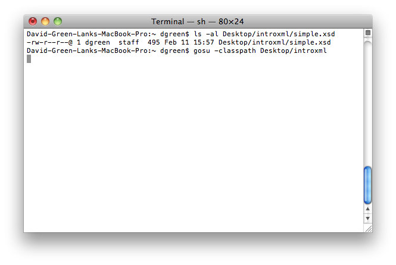

As of Gosu v0.8.5, there is a new XML databinding/DOM-type framework called XmlElement. We have made some unique design decisions that I think are first in the industry for this type of tool, aimed at making XML easier to work with from within Gosu.
You can create an XML document by using XmlElement directly. It's easy enough to use:
If you're not using XML schemas, you can stop reading now. Usage of XmlElement is pretty self explanatory, and the Gosu editor's intellisense will help you in this regard. The real power of the new system comes into effect when an XML schema is involved.
So let's start with a simple schema:
You can drop this XML schema anywhere you would be able to drop a Gosu class (it must be on the Gosu classpath):

This causes Gosu types to be created via a custom typeloader. You can use these types to manipulate XML that conforms to the schema as follows:
To bring things full circle, there happens to exist a schema for schemas, called the XML Schema schema. It's a schema that describes what a valid schema looks like. This particular schema (and a few others from the W3C) are included with the base Gosu distribution. They always exist in the type system under the package gw.xsd.w3c. So I'll finish up this intro with an example of using the XML schema schema to create the example schema above:
I've intentionally left many questions unanswered here in order to keep this introduction as simple as possible, but there is excellent documentation on the entire subsystem in the gosu-lang.org site's documentation section. If you have any feedback or questions, I'll be monitoring the forum and will do my best to help out.
And if you haven't tried Gosu, you can download it here for free.
- David Green-Lank -